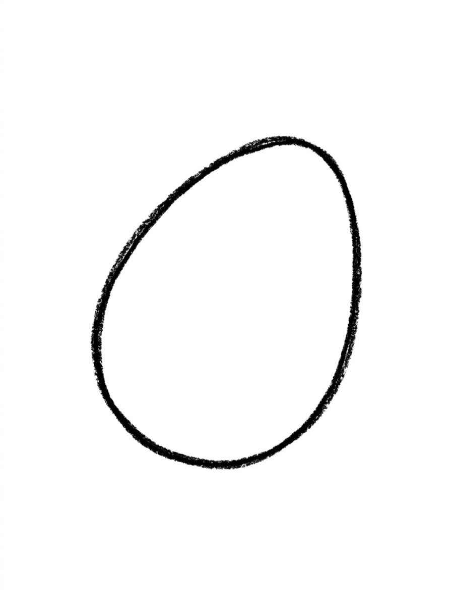
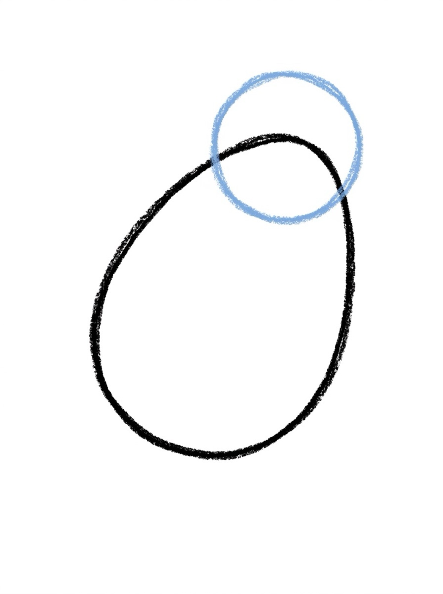
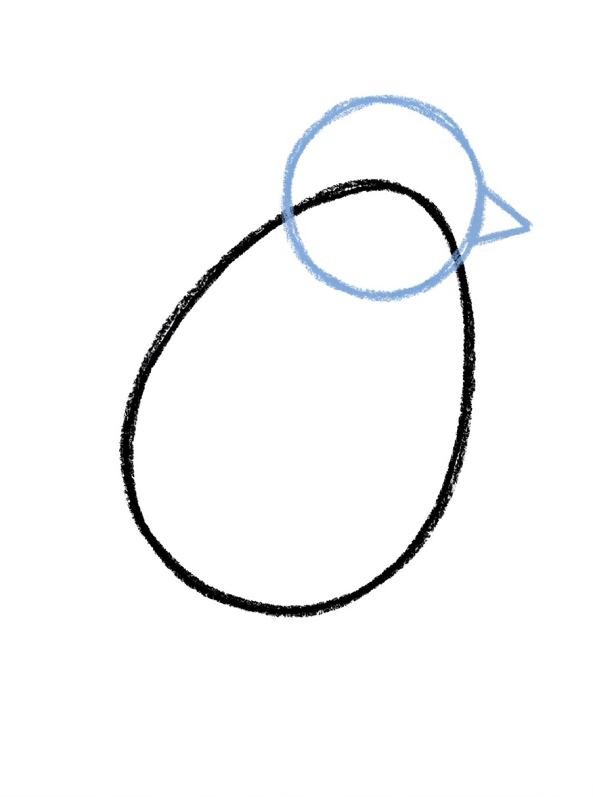
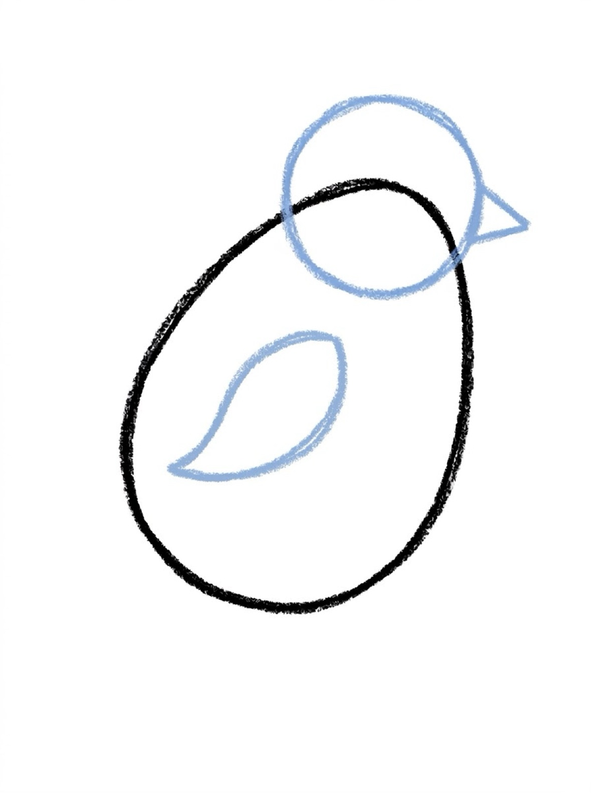
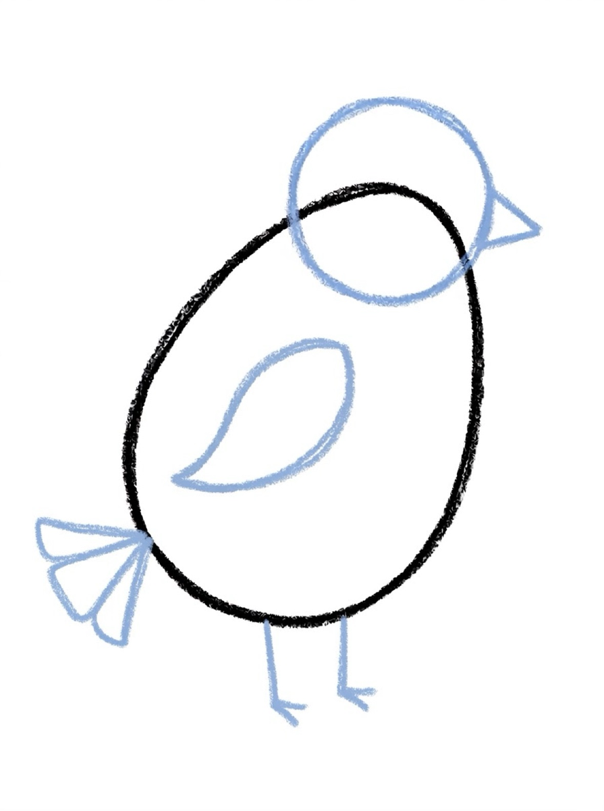
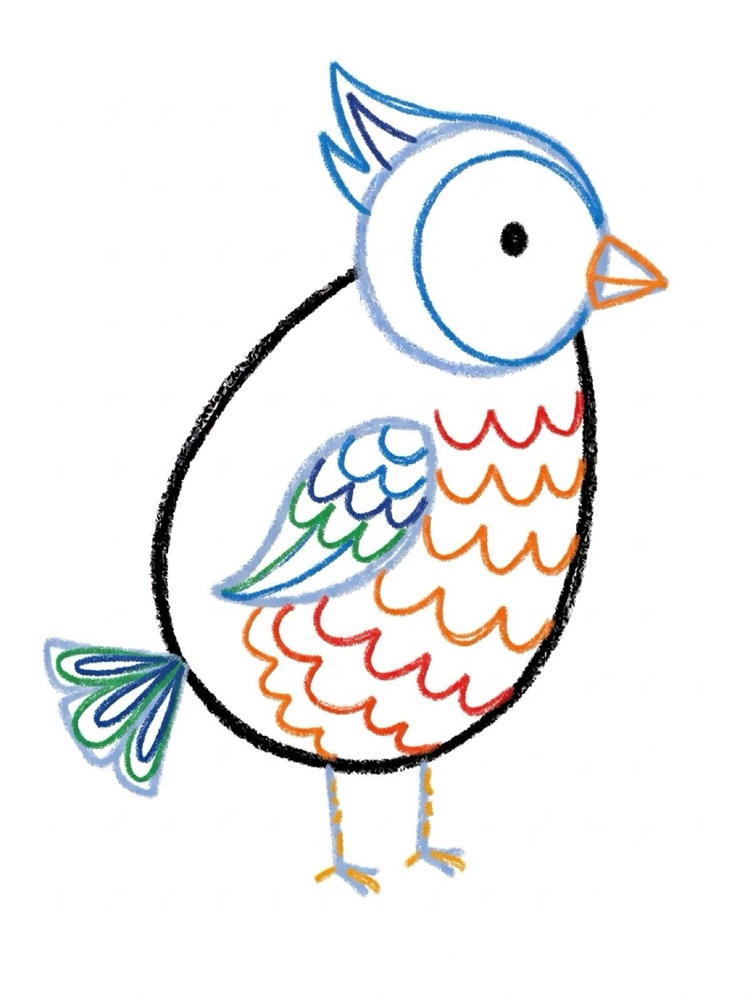

Bird Drawing for Kids How to Draw a Bird in 6 Easy Steps
Quick Answer
This free step-by-step tutorial shows kids how to draw a bird in six easy steps: an oval body, a round head, a triangle beak, a wing, a tail with legs, and color. Download the printable PDF, grab crayons, and follow along together. Made for ages 4 and up — no signup needed, just print and draw. This bird drawing easy tutorial is made for first attempts — it is also our simplest answer to birds how to draw: two shapes, six steps, done.
At a Glance
- Subject: How to draw a bird
- Ages: 3+
- Steps: 6 steps
- Time: ~10 min
- Difficulty: Easy
- Supplies: Paper, crayons
Birds are secretly one of the easiest animals to draw — it's ovals all the way down. And once kids learn this little bird, they can perch it on branches, wires, and rooftops all over their drawings. It is a bird drawing easy enough for preschoolers to finish in one sitting — two shapes to start, then one detail at a time.
✏️ How to Draw a Bird: Step by Step
One step per box — draw each new part in a different color so kids can see exactly what changed.
Step 1: The Body

Draw a plump oval tilted slightly, like an egg leaning to one side. This is the bird's body.
Step 2: The Head

Draw a smaller circle at the top of the oval, overlapping it, for the head.
Step 3: The Beak

Draw a small triangle on the front of the head for the beak.
Step 4: The Wing

Draw a curved leaf shape on the side of the body for the wing.
Step 5: Tail and Legs

Add a fan-shaped tail at the back and two thin stick legs underneath.
Step 6: Face and Color

Add a dot eye, then color your bird — blue jay, red robin, or any color you dream up!
📊 Bird Drawing by Age
Every age can join in — just adjust the job.
| Age | What they can do | Tip |
|---|---|---|
| 3–4 | Trace the oval body and color it in | Draw the beak triangle for them — small triangles are tricky |
| 4–5 | Draw body, head, and beak with help | Stick legs can be simple straight lines at this age |
| 6+ | Draw the whole bird solo | Challenge: draw three birds on a telephone wire |
🖨️ Download Your Free Bird Drawing Printable
The printable lays out all 6 steps one per box, big enough for little hands — kids draw right alongside each step.
⬇️ Open Free Printable 🖨️ Print🎁 Free printable for ages 3+
🐦 Dawn Chorus Gallery
Draw the same bird three times but color each one like a different real bird — blue jay, cardinal, robin. Look up photos together first and spot the differences. Kids learn that drawing starts with looking, and the color-matching is the fun part.
🐦 Birds in the Real World
Birds are the only animals with feathers, and feathers do three jobs at once: flying, warmth, and showing off. Not every bird flies — penguins swim, ostriches run faster than a horse, and the kiwi shuffles around at night — but every bird hatches from an egg and starts life smaller than its mother's foot. There are about ten thousand kinds of birds, from the bee hummingbird, smaller than a thumb, to the ostrich, taller than a grown-up.
Birds are also musicians: the dawn chorus your child hears in spring is mostly birds announcing themselves. Hummingbirds can fly backward, owls fly in near silence, and many backyard birds remember exactly which gardens have feeders. Ask your child which bird theirs is — and if it is perched, what it is watching so patiently.
What You'll Need to Draw a Bird
Blue, yellow, or red for the body — let your kid pick their favorite bird color. Black for the outlines, orange or yellow for the beak. The wing is the hardest part, so a crayon with a fine tip helps. Plain white paper is best; the bird's simple shapes get lost on busy backgrounds.
What They're Learning
This bird is built from just two shapes: an oval body and a circle head. That simplicity is the lesson — complex things break down into easy parts. The beak (a triangle) adds a third shape, and positioning the wing correctly on the body works on understanding where things sit in space relative to each other.
Make It Yours
Turn it into different birds: a long beak makes a toucan, a crest on the head makes a cardinal, webbed feet make a duck. Kids can draw a nest with eggs under their bird, add a worm in the beak, or create a whole flock at different sizes. Drawing the bird perched on a branch adds a nice extra challenge. Or skip the branch, spread both wings wide and angled up, and fan the tail — that is how to draw birds in flight, and a few clouds underneath sell the height.
🛒 Our Favorite Drawing Supplies
These are the supplies we reach for in our own home — washable (because kids), quality paper, and enough colors to avoid fights.
As an Amazon Associate, MomYouNeedThis earns from qualifying purchases — at no extra cost to you.
🕊️ Dove Birds Drawing
A dove is this page's bird dressed for peace: soft white or pale gray all over, a smaller, finer beak than the backyard original, and smooth, unruffled wings. The classic finishing touch is the olive branch in the beak — one curving stem with a few leaves, and the picture turns from 'white bird' into 'dove' instantly.
Doves have their own full tutorial on this site now, built around a calmer pose than the perky bird on this page. If the dove is the goal rather than a variation, that is the page to open.
🦜 Parrot Bird Drawing
A parrot is the bird shape after a trip to the paint box, but the beak comes first: big, deep, and hooked downward, strong enough to crack nuts — draw it oversized on purpose. Long tail feathers help too, since parrots carry much of their length behind them. Scarlet, cobalt, emerald, and gold can all be correct at once; the parrot is the one bird where the wildest palette is the accurate one.
For the full treatment, the parrot has its own tutorial on this site, drawn in profile so the beak gets its proper moment. Feathered flyers lead naturally to how to draw a parrot for colour and how to draw an airplane for the machine version.
🦅 How to Draw Birds Flying
Once the sitting bird feels easy, birds how to draw in flight is the natural next step. A flying bird is the same bird re-posed. Tip the body forward, take the wings off the sides, and stretch them into two long arcs that meet at the back — from the front they make a wide, shallow W; from the side, a boomerang. The legs disappear into the body, the tail fans open, and one or two curved lines underneath suggest the air doing the lifting.
The fastest practice is a sky strip: three small birds in a row, wings at different heights of the flap — up, middle, down — like frames of a cartoon. Kids grasp flight from that strip faster than from any single pose.
🪹 Bird Nest Drawing
A nest is a drawing of collected things: a rough bowl built from crisscrossed twig lines, messy on purpose, with all the tidiness saved for two or three smooth eggs resting inside. Speckle the eggs lightly. Tuck the bowl onto a branch, and perch the parent bird beside it at small scale — a nest reads as a nest when something small is waiting in it.
🔥 How to Draw Phoenix Bird
A phoenix is a bird built from a campfire's palette: scarlet, orange, and gold, with the tail stretched into three or four long ribbon feathers that curl like flames. Give it a crest of flame shapes on the head, scatter ember dots around the wings, and let the colors run hot at the body and cooler at the feather tips, like real fire.
The legend says the phoenix rises again from its own ashes — which makes it the most encouraging subject a young artist can pick. On this page, mistakes are not failures; they are plot.
🐤 Cute Bird Drawings Easy
A bird drawing easy enough for little hands starts cute: bigger head, rounder body, larger eyes. Cute is a ratio, not a species: head bigger, body rounder, eyes larger and set lower on the face, beak shrunk to a nub. Add pastel colors and one blush dot per cheek and the transformation is complete. The formula works on every bird your child can draw — a genuinely cute eagle is an achievement — and it is the fastest style upgrade available to a beginner.
🐦 Small Bird Drawing
A small bird is the four-shape shortcut: one thumb-sized oval, one circle, one triangle beak, two stick legs. Two minutes, done. Small birds are made for margins, bookmarks, gift tags, and the corner of a letter to Grandma.
Drawn in a row of three or four at slightly different sizes, sitting on one long line, they become a flock on a wire — a complete picture built from almost nothing, and a lovely first 'series' for a young artist.
✏️ Bird Drawing Outline
An outline drawing stops before the details: the oval body and the circle head in light pencil, a wedge for the beak, and nothing else. It is the plan version of the bird — useful for laying out a bigger picture, for tracing practice, and for younger kids who enjoy the shapes but not yet the steps.
Press lightly. An outline you can barely see is an outline you can adjust forever, and learning to work light is the habit that separates relaxed drawers from eraser-dependent ones.
❓ Bird Drawing FAQs
What is the easiest way for a kid to draw a bird?
Draw a plump tilted oval for the body and a smaller circle on top for the head. Add a triangle beak, a curved wing, a fan tail, and stick legs. It's ovals, a circle, and a triangle — nothing harder.
What age can kids start learning to draw a bird?
Most kids can draw the oval body and circle head around age 4 with help, and the full bird solo by 5 or 6. Younger kids can trace the shapes and focus on coloring.
What supplies do we need to draw a bird?
Paper and crayons or markers — grab blues, reds, and yellows for classic birds. The free printable PDF lays out all six steps one per box so kids can draw right alongside each step.
Is the bird drawing printable really free?
Yes — every printable on MomYouNeedThis is 100% free to download and print. No signup, no payment, just tap the download button.
Where can I find birds how to draw for kids?
Right here! This page teaches birds how to draw in 6 easy steps. Start with an oval body, add a circle head, then beak, wing, tail, and legs. The same steps work for robins, cardinals, sparrows, and blue jays — just change the beak shape and colors.
What is the easiest bird drawing for kids?
The one on this page — robins, sparrows, and storybook birds all share its plump body plan, so one tutorial unlocks a whole flock. Most 5-year-olds draw it solo; younger kids can trace the body and head, then add the beak and color with pride.
How do I print the bird drawing tutorial?
Open the PDF and print at 100% scale (not 'fit to page') so the drawing boxes stay big enough for little hands. The printable is designed to stay large — never shrunk to force a fit.
What is the easiest way to learn how to draw bird step by step?
Follow the pictures rather than a list of instructions: each of the six steps adds one clearly visible part, drawn in a fresh color, so your child never has to hold the whole bird in their head at once. Six small copies later, the bird exists.
What makes a good dove birds drawing?
Follow the bird tutorial on this page, color the bird white, and add a small olive branch in its beak. That is the whole dove birds drawing.
What makes a good parrot bird drawing?
Follow the bird tutorial on this page, draw a big curved beak, and color the feathers bright red, blue, green, and yellow. That is a parrot bird drawing.
What is the easiest way for how to draw birds flying?
Take this page's perched bird and open it up: wings stretched out instead of folded, tail fanned like a hand of cards, legs tucked out of sight. The body and head carry straight over — flying turns out to be mostly a wing decision.
What is the trick for how to draw birds in flight?
Altitude and angle do the trick: tip the body as if it is climbing, stretch the wings into a wide, shallow V, and point the head toward a top corner of the page. A few short motion lines streaming behind the tail sell the speed.
How do you make a bird nest drawing for kids?
Draw a half-circle bowl, add crisscross lines for twigs, and place two or three small oval eggs inside. That is a bird nest drawing.
What is the easiest way for how to draw phoenix bird pictures?
Give this page's bird a fire palette and a new tail: three or four long ribbon feathers curling behind it like flames, in reds, oranges, and golds. Ember dots scattered around the wings and a flame crest on the head complete the transformation.
What are the steps for step by step drawing birds?
Six pictures, in order: the body arrives first, then the head, beak, and wing, the tail and legs near the end, and color last. Each picture adds its new part in a fresh color, so your child copies one thing at a time.
How do you make cute bird drawings easy for kids?
Use round shapes, dot eyes, a tiny beak, and soft colors. Round shapes and a smile are what make cute bird drawings easy.
How do you make a small bird drawing for kids?
Shrink the tutorial down: a thumb-sized oval body, a circle head, a beak triangle, and two stick legs. Four shapes and about two minutes — and drawn in a row on one line, they become a flock on a wire.
Is this bird drawing tutorial good for beginners?
Yes — this bird drawing tutorial uses six steps with the new part highlighted at each stage, so beginners always know what to draw next.
How do you make a bird drawing outline?
Just the foundation, in your lightest pencil lines: an oval where the body goes and a circle where the head lands. Stop there on purpose — light lines stay adjustable, and every detail can be planned onto them later.
What is a sketch bird drawing, and how do kids start one?
A sketch bird drawing is the light pencil version of the bird before any color goes on. Start with the oval body and circle head from the first two steps on this page, press lightly so mistakes erase cleanly, then go over the lines you like and color it in.
Is this bird drawing easy enough for beginners?
Yes — it is one of the gentlest starts on the site. The first two steps are a single oval and a single circle, so a beginner owns most of a bird inside a minute. Younger kids can trace those shapes on the printable first and draw freehand once the bird feels familiar.
📚 Keep Exploring
- ✏️ All 76 Drawing Tutorials 76 free step-by-step drawing tutorials for kids.
- 🐾 Animal Coloring Free printable animal coloring pages for little learners.
- ✏️ Drawing Practice Free printable drawing pre-writing worksheet for toddlers.